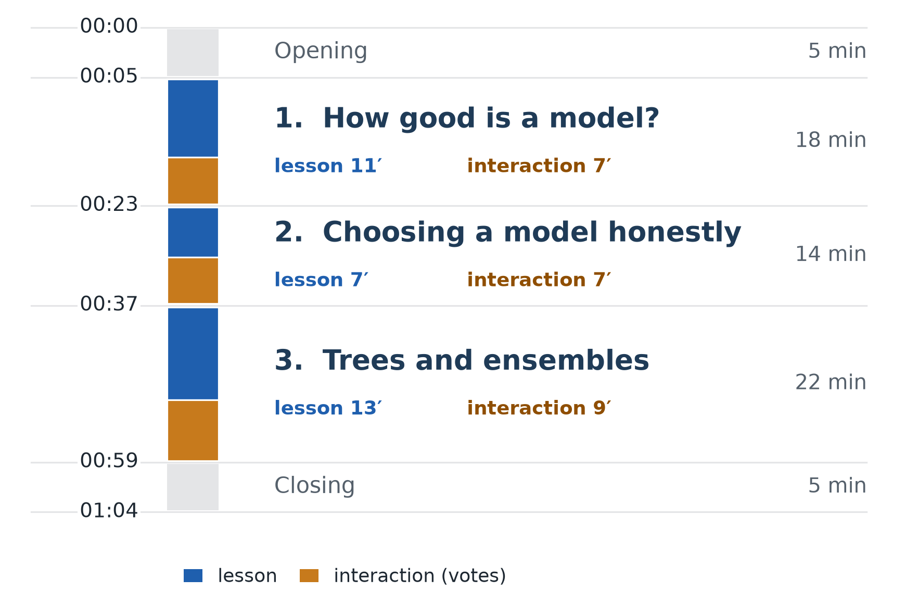
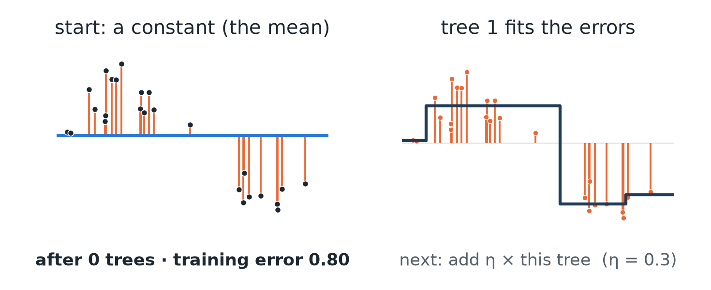
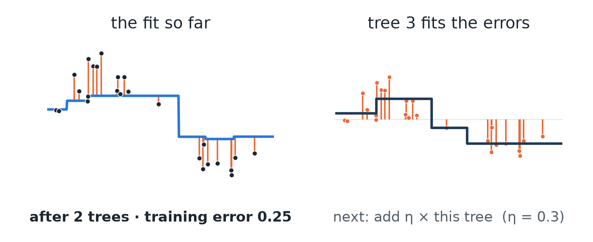
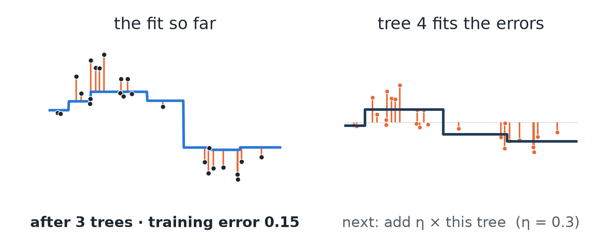

Machine learning foundations
AI, Uncertainty & Simulation Workshop, Mauritius
Housekeeping
Sticky notes
Blue
done, all good
Yellow
stuck, or a question
Particify

- Scan the code, or go to particify.de
- Enter 38549456
- No account, no name
Notation (Supervised learning)

The maths
Data \(d = \{(x_i, y_i)\}_{i=1}^{n}\) from a population \(P\), exchangeable: any ordering of the examples is equally likely (independent draws are the usual case). A model \(f_\theta\) with parameters \(\theta\) gives a predictive distribution \(p(y \mid x, \theta)\); the prediction \(\hat y = f_\theta(x)\) summarises it (its mean, for squared loss). Squared loss \(\ell(y, \hat y) = (y - \hat y)^2\); 0–1 loss \(\ell(y, \hat y) = \mathbb{1}\{y \neq \hat y\}\). A hat marks anything estimated from data.
Aside: double descent

The winner’s curse

The maths
\(\mathbb{E}\big[\max_j \widehat{\mathrm{Acc}}_j\big] \;\ge\; \max_j \mathbb{E}\big[\widehat{\mathrm{Acc}}_j\big]\): the maximum of noisy scores is biased upward.
Deep trees overfit
Key point
A bootstrap sample: \(n\) rows drawn at random from our \(n\), with replacement. Two bootstrap samples, two very different deep trees: high variance.

The maths
Each draw picks a given row with probability \(1/n\), so a row is left out of a bootstrap sample with probability \((1 - 1/n)^n \approx e^{-1} \approx 0.37\): about a third of the rows.
Gradient boosting: fit the errors, tree by tree






The maths
Start from \(F_0\), the mean of the \(y_i\). Round \(m\) fits a small tree to the residuals \(r_i = y_i - F_{m-1}(x_i)\) and adds a fraction \(\eta\) of it: \[F_m(x) = F_{m-1}(x) + \eta\,\mathrm{tree}_m(x)\] For squared loss the residuals are the negative gradient of the loss with respect to \(F\), so each round is a step of gradient descent. For any other loss, each tree is fitted to the negative gradient instead (the pseudo-residuals); with log loss for classes, that is \(y_i - p_i\), the label minus the predicted probability.
Growing a tree: the best split
Key point
Try every feature and threshold; keep the split whose two halves are purest.

The maths
For classification, use Gini impurity. The Gini impurity of a node in which a share \(p_k\) of the points has class \(k\) is \(G = \sum_k p_k(1 - p_k)\). It is 0 for a pure node and 0.5 for two balanced classes. A split is scored by the Gini of its two halves, weighted by their sizes. For regression, the squared error replaces Gini.
More trees, with XGBoost
Key point
On this toy data, XGBoost (16%) ties with the random forest (15%).

A set of plausible labels

The maths
For a chosen error rate \(\alpha\) (here \(0.1\)), a set \(C(x)\) with \[\mathbb{P}\big(y_{\text{new}} \in C(x_{\text{new}})\big) \ge 1 - \alpha,\] whatever the model, and however good or bad it is.
90% overall can hide 71% in one group
Key point
The guarantee is marginal: an average over everyone. Calibrate each group separately to get 90% in each.

Coverage from any score; usefulness from a good one

Adaptive intervals
Key point
When noise varies, a constant width over-covers easy inputs and under-covers hard ones. Conformalised quantile regression (CQR) adapts the width.

The maths
Fit models for the 5% and 95% quantiles, \(\hat t_{0.05}(x)\) and \(\hat t_{0.95}(x)\). Score \(s_i = \max\big(\hat t_{0.05}(x_i) - y_i,\; y_i - \hat t_{0.95}(x_i)\big)\), calibrate \(\hat q\) as before, and predict \(\big[\hat t_{0.05}(x) - \hat q,\; \hat t_{0.95}(x) + \hat q\big]\).